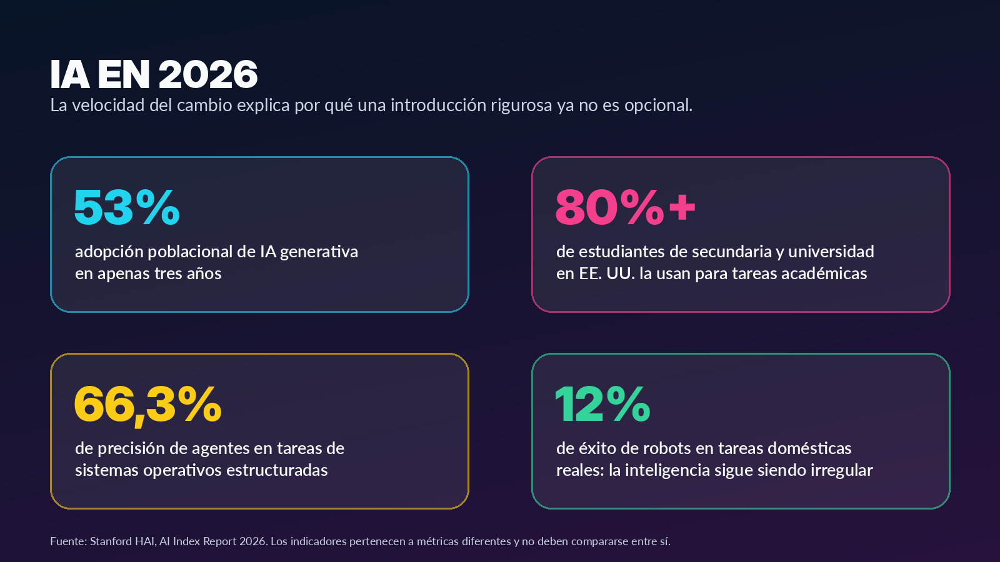
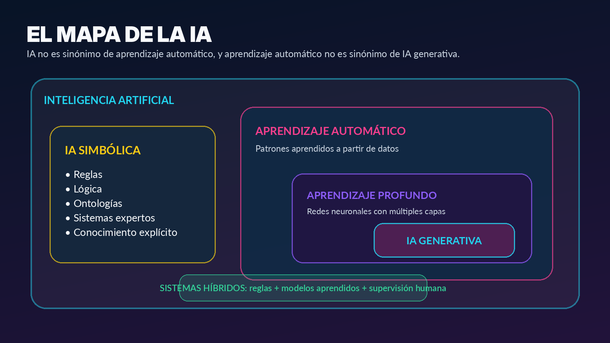
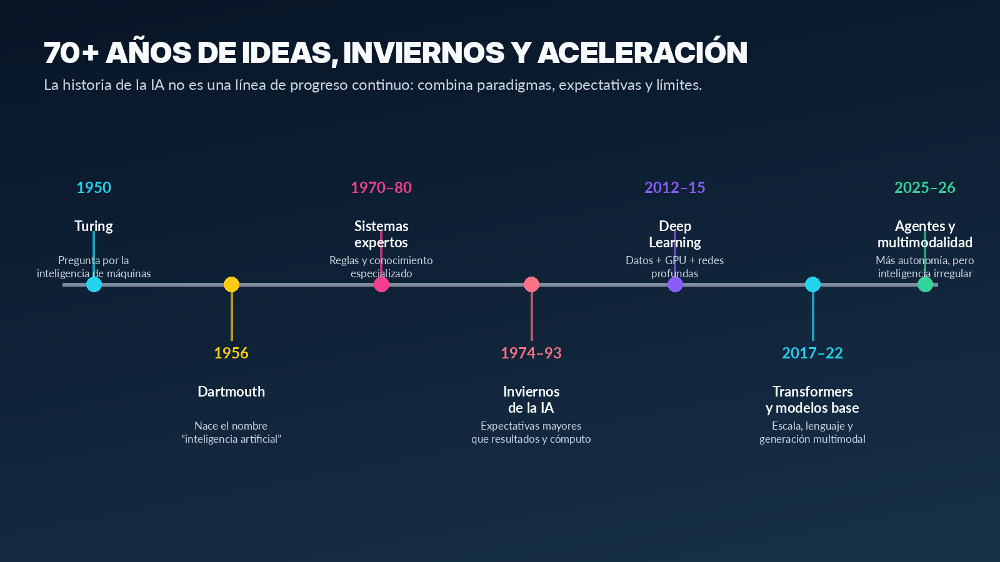
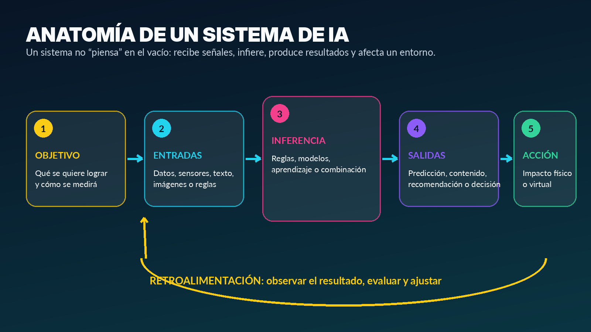
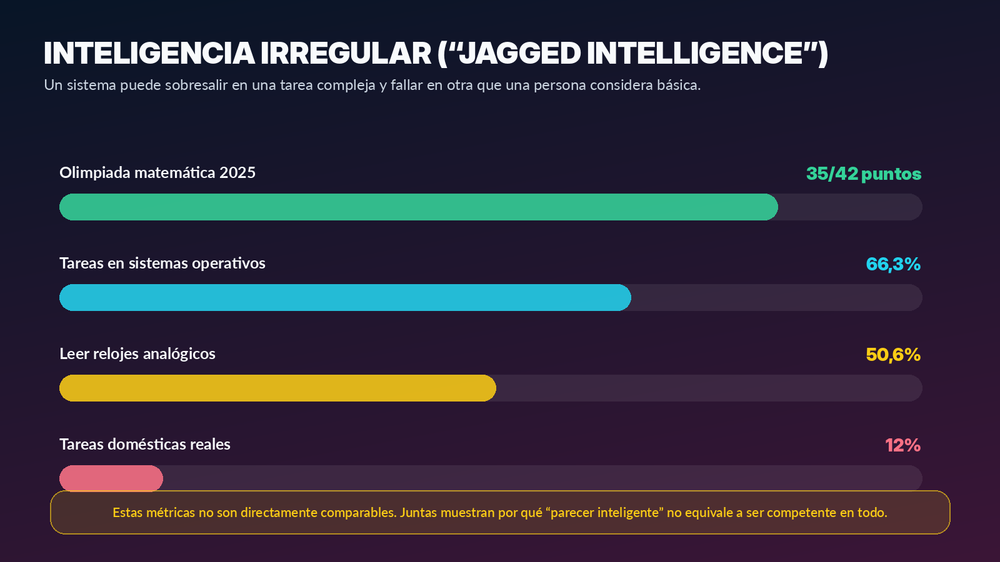
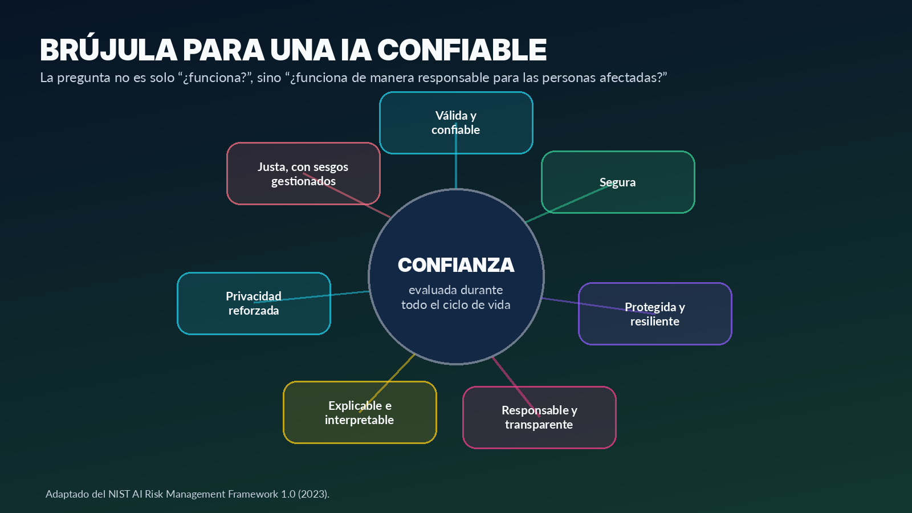

120 minutos presenciales.
Elective I Advanced Track | Week 1
Introduction to Artificial Intelligence
Guia docente para una sesion presencial de 120 minutos. El objetivo es distinguir que es un sistema de IA, como se estructura y en que se diferencia de automatizacion, software tradicional, aprendizaje automatico e IA generativa.
0 | Proposito y estructura
Alineacion con el syllabus
El syllabus ubica "Introduccion a la IA" dentro del primer bloque tematico y establece como resultado de aprendizaje que el estudiante describa los principios fundamentales de los sistemas de IA, incluyendo aprendizaje, razonamiento y toma de decisiones a partir del analisis de problemas reales. Tambien propone aprendizaje basado en problemas, proyectos, casos reales, trabajo colaborativo y uso de herramientas de software. Esta sesion desarrolla unicamente la introduccion; no aborda espacios de estados, busqueda en anchura o profundidad, heuristicas ni A*.
Distinguir que es un sistema de IA, como se estructura y en que se diferencia de automatizacion, software tradicional, aprendizaje automatico e IA generativa.
Clasificacion argumentada de casos, canvas de un sistema de IA y ticket de salida.
La toma de decisiones se explica conceptualmente; los mecanismos de busqueda se reservan para las semanas siguientes.
Distribucion sugerida de los 120 minutos
| Minutos | Bloque | Proposito |
|---|---|---|
| 0-10 | Apertura: IA en 2026 | Activar conocimientos previos y mostrar el caracter actual del tema. |
| 10-30 | Que significa "inteligencia" y que es IA | Construir una definicion rigurosa y util. |
| 30-48 | IA, automatizacion, ML y GenAI | Evitar confusiones conceptuales frecuentes. |
| 48-63 | Evolucion historica | Comprender por que coexisten varios paradigmas. |
| 63-85 | Agentes y anatomia de un sistema | Relacionar objetivos, entradas, inferencia, salidas, accion y retroalimentacion. |
| 85-103 | Aplicaciones reales | Analizar salud, finanzas, manufactura y logistica. |
| 103-113 | Limitaciones y responsabilidad | Introducir riesgo, supervision humana y confianza. |
| 113-120 | Actividad integradora y cierre | Verificar comprension y conectar con el proyecto del curso. |
1 | Apertura
La IA ya forma parte del entorno

La inteligencia artificial dejo de ser un tema reservado a laboratorios. El AI Index Report 2026 estima que la IA generativa alcanzo una adopcion poblacional del 53 % en tres anos, una velocidad superior a la observada historicamente para el computador personal o Internet. En educacion, mas del 80 % de estudiantes de secundaria y universidad encuestados en Estados Unidos reportaron utilizar IA para tareas academicas, aunque las instituciones todavia muestran dificultades para establecer politicas claras.
La aceleracion no significa que los sistemas sean uniformemente inteligentes. En 2025, los agentes evaluados en OSWorld alcanzaron 66,3 % de precision en tareas estructuradas dentro de sistemas operativos, pero los robots solo tuvieron exito en 12 % de tareas domesticas reales. Esta combinacion de fortalezas extraordinarias y fallos elementales puede entenderse como inteligencia irregular.
Clave docente: registre criterios recurrentes como aprende, predice, genera, se adapta, toma decisiones, imita al humano o es automatica. Esos criterios se revisan durante la sesion.
Diagnostico rapido: es IA?
| Caso | Clasificacion inicial | Justificacion |
|---|---|---|
| Una calculadora suma dos numeros. | No necesariamente. | Ejecuta reglas deterministas; no necesita inferir patrones ni adaptarse. |
| Un correo se envia automaticamente al completar un formulario. | Automatizacion. | La accion esta predefinida por una condicion explicita. |
| Un filtro clasifica correo como spam utilizando ejemplos historicos. | Si, aprendizaje automatico. | Infiere patrones a partir de datos etiquetados. |
| Un chatbot genera una respuesta coherente a una pregunta nueva. | Si, IA generativa. | Produce contenido mediante un modelo que estima secuencias plausibles. |
| Un termostato se enciende cuando la temperatura baja de 18 °C. | Control automatico. | Puede funcionar con una regla fija sin aprendizaje ni inferencia compleja. |
| Una plataforma recomienda cursos segun el historial del estudiante. | Probablemente IA. | Utiliza senales del usuario para estimar relevancia o afinidad. |
2 | Definicion
De la inteligencia humana a la inteligencia artificial
Una definicion util debe describir capacidades observables sin atribuir conciencia a una maquina. En una persona, la inteligencia puede incluir percepcion, memoria, aprendizaje, lenguaje, razonamiento, planificacion, creatividad, adaptacion y toma de decisiones. Estas capacidades no siempre aparecen juntas ni con la misma intensidad.
Una persona que conduce bajo lluvia intensa percibe luces y senales, interpreta distancias, recuerda normas, anticipa movimientos, decide reducir la velocidad y ajusta su conducta segun la respuesta del vehiculo. La conducta inteligente surge de un ciclo: percibir, representar la situacion, evaluar alternativas, actuar y observar el resultado.
Cuatro maneras clasicas de definir la IA
| Perspectiva | Pregunta central | Ejemplo | Limite |
|---|---|---|---|
| Pensar como humanos | Reproduce procesos mentales humanos? | Modelar como una persona resuelve un problema. | Conocer con precision el pensamiento humano es dificil. |
| Actuar como humanos | Su comportamiento es indistinguible del humano? | Conversacion asociada con la prueba de Turing. | Imitar al humano no garantiza verdad, seguridad ni racionalidad. |
| Pensar racionalmente | Obtiene conclusiones correctas mediante principios logicos? | Sistema que deriva una conclusion a partir de premisas. | La realidad contiene incertidumbre, datos incompletos y recursos limitados. |
| Actuar racionalmente | Elige acciones que aumentan la posibilidad de alcanzar un objetivo? | Robot que ajusta su conducta para limpiar con bateria limitada. | La accion depende de como se definan el objetivo y la medida de exito. |
Para este curso resulta especialmente util la perspectiva de agentes racionales: un sistema es analizado por sus objetivos, la informacion disponible, las acciones posibles y las consecuencias de sus decisiones. "Racional" no significa perfecto; significa seleccionar la mejor accion esperada con la informacion y los recursos disponibles.
Clave docente: generalmente no. La formula esta completamente especificada. Seria diferente si el sistema estimara riesgo de desercion desde multiples senales y produjera una recomendacion probabilistica.
3 | Conceptos
IA no es sinonimo de automatizacion

Software tradicional
Una persona define reglas y procedimientos explicitos. El computador ejecuta instrucciones sobre entradas conocidas. Calcular el impuesto de una factura puede expresarse mediante una formula precisa.
Automatizacion
Automatizar significa ejecutar una tarea con poca intervencion humana. Puede ser simple o sofisticada, pero no requiere necesariamente IA.
IA simbolica
Representa conocimiento mediante simbolos, hechos, reglas y relaciones. Es explicita y verificable, pero puede ser fragil cuando aumentan excepciones o variabilidad.
Aprendizaje automatico
El programador define representacion, objetivo y procedimiento para ajustar un modelo a partir de datos. El resultado es probabilistico y puede cambiar con nuevos datos.
Aprendizaje profundo
Utiliza redes neuronales con multiples capas para aprender representaciones jerarquicas; ha transformado vision, voz y lenguaje.
IA generativa
Produce texto, imagenes, audio, video o codigo a partir de patrones aprendidos. La fluidez no garantiza exactitud.
Comparacion paso a paso: solicitudes estudiantiles
| Enfoque | Mecanismo | Comportamiento |
|---|---|---|
| Regla fija | Si el asunto contiene "certificado", enviar el instructivo A. | Rapido y predecible; falla ante redacciones no previstas. |
| Automatizacion de flujo | Crear un ticket, asignar responsable y notificar. | Orquesta tareas sin interpretar profundamente el contenido. |
| Clasificador de ML | Estimar la categoria de la solicitud con ejemplos historicos. | Generaliza a mensajes similares, pero puede equivocarse. |
| Modelo generativo | Redactar una respuesta basada en contexto y politicas disponibles. | Genera lenguaje flexible; requiere verificacion para evitar invenciones. |
| Sistema hibrido | Clasificar, recuperar la norma oficial, generar borrador y exigir aprobacion humana. | Combina eficiencia, evidencia y control. |
4 | Historia
Evolucion de la IA

Propuso sustituir "pueden pensar las maquinas?" por un criterio observable basado en conversacion. Superar una conversacion no demuestra conciencia ni competencia general.
McCarthy, Minsky, Rochester y Shannon plantearon que aspectos del aprendizaje y la inteligencia podian describirse con precision suficiente para simularse por una maquina.
Capturaban conocimiento de especialistas y aplicaban inferencias. Fueron valiosos en dominios acotados, pero costosos de mantener.
Cuando las promesas superaron la capacidad disponible, disminuyeron financiacion e interes. Un prototipo llamativo no equivale a un sistema robusto.
Con mas datos y computo, las redes profundas mejoraron reconocimiento de imagenes, voz y lenguaje durante la decada de 2010.
La arquitectura Transformer permitio procesar dependencias en secuencias de manera eficiente y escalable. Desde 2022, el lenguaje natural acelero la adopcion publica.
Los sistemas combinan lenguaje, imagen, audio, video y uso de herramientas. Aumenta la utilidad y tambien la superficie de riesgo.
5 | Sistemas situados
Agentes inteligentes

La unidad minima de analisis no es solo el modelo: es el ciclo entre sistema, entorno y consecuencias. Un agente percibe un entorno mediante sensores o entradas, procesa informacion y actua mediante actuadores o salidas. Su calidad se evalua segun una medida de desempeno.
El esquema PEAS permite especificar una tarea antes de escoger un algoritmo: Performance measure, Environment, Actuators y Sensors.
| Componente | Descripcion |
|---|---|
| Medida de desempeno | Cobertura de limpieza, suciedad retirada, bateria, tiempo, choques evitados y regreso seguro. |
| Entorno | Habitaciones, muebles, personas, mascotas, escaleras, superficies y estaciones de carga. |
| Actuadores | Motores, ruedas, cepillos, potencia de aspiracion y senales de estado. |
| Sensores | Proximidad, contacto, camara, suciedad, bateria y posicion estimada. |
El sistema recibe senales, representa la situacion, evalua que accion favorece la medida de desempeno, actua y observa el resultado. En esta sesion no se desarrolla la busqueda de rutas; solo se identifica el ciclo de decision.
| Elemento | Descripcion y pregunta critica |
|---|---|
| Objetivo | Identificar estudiantes que podrian necesitar apoyo temprano. Es para ayudar o sancionar? |
| Entradas | Asistencia, notas, actividad en campus virtual, entregas y antecedentes. Son pertinentes y consentidas? |
| Inferencia | Modelo que estima probabilidad de riesgo. Con que poblacion fue entrenado? |
| Salida | Nivel de riesgo y factores relevantes. Es prediccion o certeza? |
| Accion | Contacto de bienestar, tutoria o acompanamiento. Una persona revisa el caso? |
| Retroalimentacion | Registrar si el apoyo fue util y si la alerta fue correcta. Se mide el dano de falsos positivos? |
De entradas a consecuencias
- Definir el problema con precision.
- Definir una medida de desempeno.
- Identificar el entorno.
- Seleccionar entradas pertinentes.
- Elegir el mecanismo de inferencia.
- Definir la salida y su incertidumbre.
- Asignar supervision y responsabilidad.
- Observar efectos y retroalimentar.
6 | Tipos de salida
Problemas que aborda la IA
La tecnica adecuada depende del tipo de salida y de la decision que se necesita apoyar.
| Tipo | Pregunta | Ejemplo | Salida |
|---|---|---|---|
| Clasificacion | A que categoria pertenece? | Spam/no spam; pieza defectuosa/no defectuosa. | Etiqueta o probabilidad. |
| Regresion o estimacion | Cual es el valor esperado? | Tiempo de entrega, demanda, consumo energetico. | Numero continuo e incertidumbre. |
| Deteccion | Donde esta el objeto o evento? | Lesion en una imagen; intrusion en una red. | Ubicacion, evento y confianza. |
| Recomendacion | Que opcion es relevante? | Curso, pelicula, producto o ruta de atencion. | Lista ordenada. |
| Agrupamiento | Que casos se parecen sin etiquetas? | Segmentos de clientes o patrones. | Grupos y caracteristicas comunes. |
| Generacion | Que contenido puede producirse? | Texto, imagen, codigo, audio o resumen. | Contenido nuevo que debe validarse. |
| Decision y control | Que accion conviene ejecutar? | Ajustar una maquina o priorizar una alerta. | Accion sugerida o ejecutada. |
7 | Casos reales
Aplicaciones en problemas reales
Salud
Apoyo al diagnostico, no sustitucion automatica. Entradas: imagenes, metadatos clinicos y criterios de calidad. Riesgos: falsos negativos, sesgo, datos incompletos y automatizacion excesiva.
Finanzas
Deteccion de fraude sin bloquear injustamente a clientes legitimos. Riesgos: falsos positivos, adaptacion de atacantes, privacidad y discriminacion indirecta.
Manufactura
Mantenimiento predictivo e inspeccion visual. Riesgos: sensores descalibrados, cambios en la linea y datos historicos no representativos.
Logistica
Estimacion de tiempos y coordinacion. Riesgos: datos desactualizados, condiciones imprevistas y optimizacion que ignore seguridad o bienestar laboral.
| Sector | Valor potencial | Error critico |
|---|---|---|
| Salud | Priorizacion y apoyo clinico. | No detectar un caso grave o presentar una sugerencia como diagnostico definitivo. |
| Finanzas | Reducir perdidas y responder con rapidez. | Bloquear sistematicamente a ciertos grupos o no detectar fraude adaptativo. |
| Manufactura | Menos paradas y mejor control de calidad. | Tomar decisiones con sensores defectuosos o modelos desactualizados. |
| Logistica | Mejores estimaciones y uso de recursos. | Optimizar una metrica ignorando seguridad, regulacion o carga de trabajo. |
8 | Confianza
Capacidades, limites y riesgos

Respuesta convincente falsa
Los modelos generativos producen secuencias plausibles, no garantias de verdad. Pueden inventar referencias, mezclar hechos o responder con seguridad a preguntas mal planteadas.
Sesgo y representacion
Un sistema aprende de datos producidos por sociedades e instituciones. El sesgo tambien aparece al elegir etiquetas, variables, umbrales y medidas de exito.
Privacidad y seguridad
Los datos pueden revelar informacion sensible. Una interfaz de IA puede exponer informacion confidencial mediante consultas, registros, ataques o configuraciones incorrectas.
Sobredependencia
La supervision humana no debe ser simbolica: quien revisa necesita tiempo, informacion, autoridad y capacidad para contradecir el sistema.
Cambio del entorno
Un modelo puede funcionar bien durante el desarrollo y degradarse despues. Cambian usuarios, datos, procesos, normas y adversarios.

El NIST AI Risk Management Framework propone evaluar validez y confiabilidad, seguridad, proteccion y resiliencia, responsabilidad y transparencia, explicabilidad e interpretabilidad, privacidad y justicia con sesgos perjudiciales gestionados. No siempre es posible maximizar todas estas caracteristicas al mismo tiempo.
Clave docente: la responsabilidad no desaparece por utilizar un modelo. Debe distribuirse entre quienes disenan, proveen, integran, operan, supervisan y toman la decision final.
9 | Actividad integradora
Reto: alerta temprana de riesgo academico
En equipos de tres o cuatro estudiantes, disenen conceptualmente un sistema que ayude a identificar estudiantes que podrian requerir acompanamiento. La tarea no consiste en programar ni escoger algoritmo: consiste en definir problema, entradas, salida, decision, evaluacion y riesgos.
| Paso | Pregunta | Ejemplo de respuesta |
|---|---|---|
| 1. Problema | Que situacion concreta se quiere mejorar? | Detectar senales tempranas de dificultad antes del abandono. |
| 2. Objetivo | Que resultado valioso se espera? | Activar apoyo oportuno, no etiquetar ni sancionar. |
| 3. Usuarios | Quien utiliza la salida y quien resulta afectado? | Bienestar, docentes, estudiante y coordinacion academica. |
| 4. Entradas | Que datos son pertinentes y legitimos? | Asistencia, notas, entregas y solicitud voluntaria de apoyo. |
| 5. Inferencia | Reglas, modelo aprendido o combinacion? | Modelo de riesgo complementado con reglas y revision humana. |
| 6. Salida | Que produce exactamente? | Nivel de riesgo, incertidumbre y factores contribuyentes. |
| 7. Accion | Que ocurre despues? | Contacto respetuoso, tutoria y validacion de la situacion. |
| 8. Evaluacion | Como se sabra si funciona? | Oportunidad del apoyo, falsos positivos, cobertura, equidad y satisfaccion. |
| 9. Riesgos | Que dano podria causar? | Estigmatizacion, privacidad, errores o uso sancionatorio. |
| 10. Supervision | Quien puede corregir o detener el sistema? | Comite responsable con trazabilidad, revision y canal de apelacion. |
Canvas de sistema de IA
Problema y objetivoUsuarios y personas afectadas
Entorno y restriccionesEntradas y calidad de datos
Mecanismo de inferenciaSalida, incertidumbre y accion
Metricas de desempenoRiesgos y posibles danos
Supervision humanaRetroalimentacion y monitoreo
Socializacion rapida
- Cada equipo dispone de 60 segundos para presentar problema, salida, accion y riesgo principal.
- Los demas equipos formulan una pregunta sobre datos, error o responsabilidad.
- La clase selecciona el diseno que mejor justifica por que necesita IA y no solo una regla o automatizacion.
10 | Cierre
Verificacion
Sintesis de la sesion
- La IA estudia y construye sistemas que infieren como producir salidas capaces de influir en un entorno.
- No todo software automatico es IA; la diferencia esta en el tipo de inferencia, adaptacion, datos y decision.
- La IA incluye enfoques simbolicos, aprendizaje automatico, aprendizaje profundo, generacion y sistemas hibridos.
- Un agente se analiza por objetivos, entorno, sensores o entradas, actuadores o salidas y medida de desempeno.
- La competencia tecnica puede ser irregular: una fortaleza en una prueba no garantiza comprension general.
- El valor de un sistema depende tambien de supervision, privacidad, equidad, seguridad, transparencia y monitoreo.
Ticket de salida
- Explique en dos frases la diferencia entre automatizacion e inteligencia artificial.
- Seleccione una aplicacion cotidiana y describa sus entradas, salida y decision afectada.
- Mencione un riesgo que no se resuelva unicamente aumentando la precision del modelo.
A | Apendice docente
Respuestas orientadoras
Criterios para clasificar un caso como IA
- Existe una inferencia no trivial desde entradas hacia una prediccion, recomendacion, contenido o decision.
- El sistema trabaja con incertidumbre, patrones, lenguaje, percepcion o multiples alternativas.
- Puede aprender o adaptarse, aunque el aprendizaje no es obligatorio en toda IA.
- La salida influye en un entorno fisico o virtual y puede evaluarse mediante una medida de desempeno.
- La etiqueta IA no se justifica unicamente porque el sistema sea nuevo, complejo, conectado a Internet o automatico.
Rubrica breve del canvas
| Criterio | Logro alto | Logro basico | Logro insuficiente |
|---|---|---|---|
| Problema y objetivo | Concreto, legitimo y medible. | Comprensible, pero amplio. | Confunde problema con herramienta. |
| Diseno del sistema | Relaciona entradas, inferencia, salida y accion. | Describe componentes sin conexion completa. | Solo menciona una aplicacion o modelo. |
| Evaluacion | Incluye desempeno, error e impacto. | Incluye una metrica tecnica. | No define como verificar el sistema. |
| Responsabilidad | Anticipa riesgos y supervision real. | Menciona riesgo sin mitigacion clara. | Asume que la IA decide correctamente. |
R | Referencias
Fuentes utilizadas
- Autio, C., Schwartz, R., Dunietz, J., Jain, S., Stanley, M., Tabassi, E., Hall, P., & Roberts, K. (2024). Artificial Intelligence Risk Management Framework: Generative Artificial Intelligence Profile (NIST AI 600-1). https://doi.org/10.6028/NIST.AI.600-1
- Bommasani, R., Hudson, D. A., Adeli, E., Altman, R., Arora, S., von Arx, S., et al. (2021). On the opportunities and risks of foundation models. https://doi.org/10.48550/arXiv.2108.07258
- LeCun, Y., Bengio, Y., & Hinton, G. (2015). Deep learning. Nature, 521, 436-444. https://doi.org/10.1038/nature14539
- McCarthy, J., Minsky, M. L., Rochester, N., & Shannon, C. E. (2006). A proposal for the Dartmouth Summer Research Project on Artificial Intelligence, August 31, 1955. https://doi.org/10.1609/aimag.v27i4.1904
- Miao, F., & Holmes, W. (2023). Guidance for generative AI in education and research. UNESCO. https://unesdoc.unesco.org/ark:/48223/pf0000386693
- National Institute of Standards and Technology. (2023). Artificial Intelligence Risk Management Framework (AI RMF 1.0). https://doi.org/10.6028/NIST.AI.100-1
- OECD. (2024). Explanatory memorandum on the updated OECD definition of an AI system. https://oecd.ai/en/ai-publications/explanatory-memorandum-on-the-updated-oecd-definition-of-an-ai-system
- Russell, S. J., & Norvig, P. (2021). Artificial intelligence: a modern approach (4th ed.). Pearson.
- Stanford Institute for Human-Centered Artificial Intelligence. (2026). AI Index Report 2026. Stanford University. https://hai.stanford.edu/ai-index/2026-ai-index-report
- Turing, A. M. (1950). Computing machinery and intelligence. Mind, 59(236), 433-460. https://doi.org/10.1093/mind/LIX.236.433
- Vaswani, A., Shazeer, N., Parmar, N., Uszkoreit, J., Jones, L., Gomez, A. N., Kaiser, L., & Polosukhin, I. (2017). Attention is all you need. Advances in Neural Information Processing Systems, 30.
- Universidad Santo Tomas, Seccional Tunja. (2026). Syllabus de Electiva I Profundizacion: Inteligencia Artificial [Documento interno].
0 | Purpose and structure
Alignment with the syllabus
The syllabus places "Introduction to AI" in the first thematic block and expects students to describe the fundamental principles of AI systems, including learning, reasoning, and decision-making from real problem analysis. This session only develops the introduction; state spaces, breadth-first search, depth-first search, heuristics, and A* are left for later weeks.
120 in-person minutes.
Distinguish what an AI system is, how it is structured, and how it differs from automation, traditional software, machine learning, and generative AI.
Argument-based case classification, an AI system canvas, and an exit ticket.
Decision-making is explained conceptually; search mechanisms are reserved for following weeks.
Suggested 120-minute distribution
| Minutes | Block | Purpose |
|---|---|---|
| 0-10 | Opening: AI in 2026 | Activate prior knowledge and show the current nature of the topic. |
| 10-30 | What "intelligence" means and what AI is | Build a rigorous and useful definition. |
| 30-48 | AI, automation, ML, and GenAI | Avoid common conceptual confusion. |
| 48-63 | Historical evolution | Understand why several paradigms coexist. |
| 63-85 | Agents and system anatomy | Connect goals, inputs, inference, outputs, action, and feedback. |
| 85-103 | Real applications | Analyze health, finance, manufacturing, and logistics. |
| 103-113 | Limits and responsibility | Introduce risk, human oversight, and trust. |
| 113-120 | Integrative activity and closing | Check understanding and connect with the course project. |
1 | Opening
AI is already part of the environment
Artificial intelligence is no longer limited to laboratories. The AI Index Report 2026 estimates that generative AI reached 53% population adoption in three years, faster than historical adoption of the personal computer or the Internet. In education, more than 80% of surveyed high school and university students in the United States reported using AI for academic tasks, while institutions still struggle to define clear policies.
Fast adoption does not mean uniformly intelligent systems. In 2025, agents evaluated in OSWorld reached 66.3% accuracy on structured operating system tasks, while robots succeeded in only 12% of real domestic tasks. This mix of extraordinary strengths and elementary failures can be read as uneven intelligence.
Quick diagnostic: is it AI?
| Case | Initial classification | Justification |
|---|---|---|
| A calculator adds two numbers. | Not necessarily. | It executes deterministic rules and does not need pattern inference or adaptation. |
| An email is sent automatically after a form is completed. | Automation. | The action is predefined by an explicit condition. |
| A filter classifies email as spam using historical examples. | Yes, machine learning. | It infers patterns from labeled data. |
| A chatbot generates a coherent response to a new question. | Yes, generative AI. | It produces content through a model that estimates plausible sequences. |
| A thermostat turns on when temperature drops below 18 °C. | Automatic control. | It can work with a fixed rule without learning or complex inference. |
| A platform recommends courses based on student history. | Probably AI. | It uses user signals to estimate relevance or affinity. |
2 | Definition
From human intelligence to artificial intelligence
A useful definition describes observable capabilities without attributing consciousness to a machine. Intelligence may include perception, memory, learning, language, reasoning, planning, creativity, adaptation, and decision-making. These capabilities do not always appear together.
| Perspective | Central question | Example | Limit |
|---|---|---|---|
| Thinking humanly | Does the system reproduce human mental processes? | Modeling how a person solves a problem. | Human thinking is hard to know precisely. |
| Acting humanly | Is its behavior indistinguishable from human behavior? | Conversation related to the Turing test. | Imitation does not guarantee truth, safety, or rationality. |
| Thinking rationally | Does it derive correct conclusions using logical principles? | A system deriving a conclusion from premises. | Reality includes uncertainty, incomplete data, and limited resources. |
| Acting rationally | Does it choose actions that increase the chance of achieving a goal? | A robot adjusting behavior to clean with limited battery. | Action depends on how the goal and success measure are defined. |
3 | Concepts
AI is not the same as automation
Traditional software
A person defines explicit rules and procedures. The computer executes those instructions over known inputs.
Automation
Automation means performing a task with little human intervention. It can be simple or sophisticated, but it does not necessarily require AI.
Symbolic AI
Represents knowledge through symbols, facts, rules, and relationships. It is explicit and verifiable, but can be fragile with many exceptions.
Machine learning
The programmer defines a representation, a learning objective, and a procedure to fit a model from data.
Deep learning
Uses multilayer neural networks to learn hierarchical representations, especially in vision, speech, and language.
Generative AI
Produces new text, images, audio, video, or code from learned patterns. Fluency does not guarantee accuracy.
4 | History
Evolution of AI
The question "can machines think?" was replaced by an observable criterion based on conversation.
McCarthy, Minsky, Rochester, and Shannon proposed that aspects of learning and intelligence could be described precisely enough to be simulated by a machine.
Specialist knowledge was captured as rules and inferences. These systems were useful in bounded domains but expensive to maintain.
When promises exceeded available capability, funding and interest decreased. A striking prototype is not the same as a robust system.
More data and compute helped deep networks improve image, speech, and language recognition during the 2010s.
Transformer architectures enabled scalable sequence processing and helped accelerate public adoption through natural-language interaction.
5 | Situated systems
Intelligent agents
The basic unit of analysis is not only the model: it is the cycle between system, environment, and consequences. An agent perceives an environment through sensors or inputs, processes information, and acts through actuators or outputs. Its quality is evaluated with a performance measure.
- Define the problem precisely.
- Define a performance measure.
- Identify the environment.
- Select relevant inputs.
- Choose the inference mechanism.
- Define the output and uncertainty.
- Assign oversight and responsibility.
- Observe effects and feed results back into the system.
6 | Output types
Problems addressed by AI
| Type | Question | Example | Output |
|---|---|---|---|
| Classification | Which category does it belong to? | Spam/not spam; defective/not defective. | Label or probability. |
| Regression or estimation | What is the expected value? | Delivery time, demand, energy use. | Continuous number and uncertainty. |
| Detection | Where is the object or event? | Lesion in an image; network intrusion. | Location, event, and confidence. |
| Recommendation | Which option is relevant? | Course, movie, product, or care route. | Ranked list. |
| Clustering | Which cases are similar without labels? | Customer segments or behavior patterns. | Groups and common features. |
| Generation | What content can be produced from context? | Text, image, code, audio, or summary. | New content that must be validated. |
| Decision and control | Which action should be taken? | Adjust a machine or prioritize an alert. | Suggested or executed action. |
7 | Real cases
Applications in real problems
Health
Diagnostic support, not automatic replacement. Main risks: false negatives, population bias, incomplete data, and excessive automation.
Finance
Fraud detection without unfairly blocking legitimate clients. Main risks: false positives, attacker adaptation, privacy, and indirect discrimination.
Manufacturing
Predictive maintenance and visual inspection. Main risks: miscalibrated sensors, line changes, and outdated historical data.
Logistics
Delivery-time estimation and resource coordination. Main risks: stale data, unforeseen conditions, and optimizing cost while ignoring safety or labor wellbeing.
8 | Trust
Capabilities, limits, and risks
Convincing but false answers
Generative models produce plausible sequences, not guarantees of truth. They can invent references, mix facts, or answer confidently to a poor question.
Bias and representation
Systems learn from data produced by societies and institutions. Bias also appears through labels, variables, thresholds, and success measures.
Privacy and security
Data can reveal sensitive information. AI interfaces can expose confidential information through queries, logs, attacks, or misconfiguration.
Overreliance
Human oversight must be real: reviewers need time, information, authority, and capacity to contradict the system.
9 | Integrative activity
Challenge: early academic-risk alert
In teams of three or four students, design a conceptual system to help identify students who may require support. The task is not to program or choose an algorithm; it is to define the problem, inputs, output, decision, evaluation, and risks.
Problem and goalUsers and affected people
Environment and constraintsInputs and data quality
Inference mechanismOutput, uncertainty, and action
Performance metricsRisks and possible harm
Human oversightFeedback and monitoring
10 | Closing
Check for understanding
- AI studies and builds systems that infer how to produce outputs able to influence an environment.
- Not all automatic software is AI; the difference is the type of inference, adaptation, data, and decision.
- AI includes symbolic approaches, machine learning, deep learning, generation, and hybrid systems.
- An agent is analyzed through goals, environment, sensors or inputs, actuators or outputs, and performance measure.
- Technical competence can be uneven: strength in one test does not guarantee general understanding.
- The value of a system also depends on oversight, privacy, fairness, safety, transparency, and monitoring.
Exit ticket
- Explain in two sentences the difference between automation and artificial intelligence.
- Select an everyday application and describe its inputs, output, and affected decision.
- Mention one risk that cannot be solved only by increasing model accuracy.
R | References
Sources used
- Autio, C., Schwartz, R., Dunietz, J., Jain, S., Stanley, M., Tabassi, E., Hall, P., & Roberts, K. (2024). Artificial Intelligence Risk Management Framework: Generative Artificial Intelligence Profile (NIST AI 600-1). https://doi.org/10.6028/NIST.AI.600-1
- Bommasani, R., Hudson, D. A., Adeli, E., Altman, R., Arora, S., von Arx, S., et al. (2021). On the opportunities and risks of foundation models. https://doi.org/10.48550/arXiv.2108.07258
- LeCun, Y., Bengio, Y., & Hinton, G. (2015). Deep learning. Nature, 521, 436-444. https://doi.org/10.1038/nature14539
- McCarthy, J., Minsky, M. L., Rochester, N., & Shannon, C. E. (2006). A proposal for the Dartmouth Summer Research Project on Artificial Intelligence, August 31, 1955. https://doi.org/10.1609/aimag.v27i4.1904
- Miao, F., & Holmes, W. (2023). Guidance for generative AI in education and research. UNESCO. https://unesdoc.unesco.org/ark:/48223/pf0000386693
- National Institute of Standards and Technology. (2023). Artificial Intelligence Risk Management Framework (AI RMF 1.0). https://doi.org/10.6028/NIST.AI.100-1
- OECD. (2024). Explanatory memorandum on the updated OECD definition of an AI system. https://oecd.ai/en/ai-publications/explanatory-memorandum-on-the-updated-oecd-definition-of-an-ai-system
- Russell, S. J., & Norvig, P. (2021). Artificial intelligence: a modern approach (4th ed.). Pearson.
- Stanford Institute for Human-Centered Artificial Intelligence. (2026). AI Index Report 2026. Stanford University. https://hai.stanford.edu/ai-index/2026-ai-index-report
- Turing, A. M. (1950). Computing machinery and intelligence. Mind, 59(236), 433-460. https://doi.org/10.1093/mind/LIX.236.433
- Vaswani, A., Shazeer, N., Parmar, N., Uszkoreit, J., Jones, L., Gomez, A. N., Kaiser, L., & Polosukhin, I. (2017). Attention is all you need. Advances in Neural Information Processing Systems, 30.
- Universidad Santo Tomas, Seccional Tunja. (2026). Syllabus de Electiva I Profundizacion: Inteligencia Artificial [Internal document].